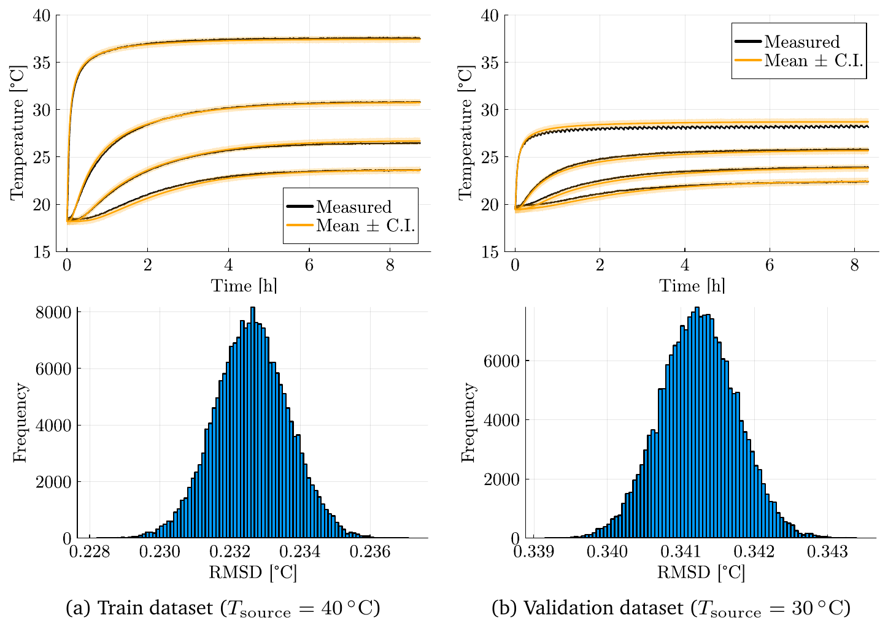
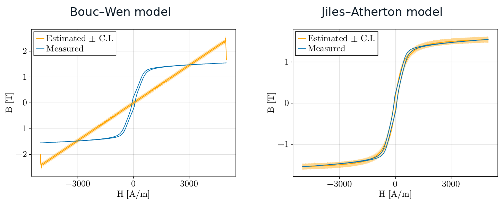
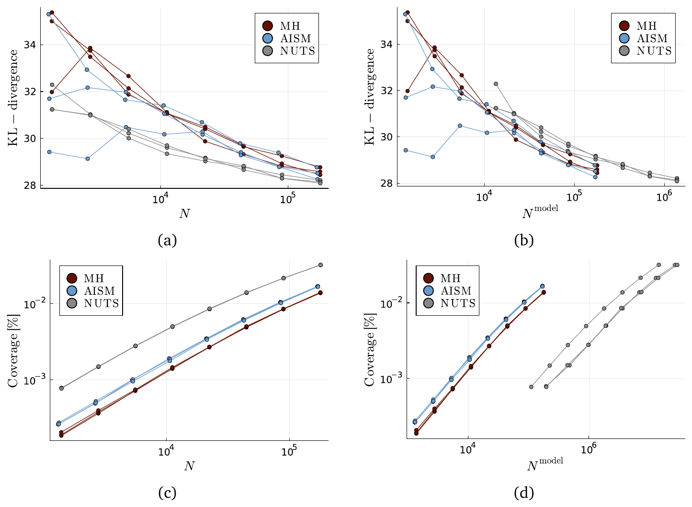

Bayesian calibration across thermal, viscoelastic and hysteretic models
PhD, Chapters 2 and 3. Chapter 3 is published in the International Journal for Uncertainty Quantification (2026). Chapter 2 is part of the DAMOCLES project at EAISI, TU/e.
Key result. Calibration worked for the thermal, viscoelastic and Jiles–Atherton models, and exposed the Bouc–Wen model as unable to describe the material.
Problem
Engineering simulations combine conservation laws, which are reliable, with constitutive equations, which describe how a material responds and are much less certain. Their parameters come from laboratory measurements that are noisy and limited. The question here: how well does Bayesian calibration work across very different kinds of material behavior, and what limits it?
Approach
I applied one Bayesian pipeline to three experiments: heat conduction in a paraffin wax column, large amplitude oscillatory shear of a shampoo in a rheometer (a nonlinear viscoelastic fluid, Giesekus model), and magnetic hysteresis measured with an Epstein frame (Jiles–Atherton and Bouc–Wen models). Priors come from the literature and preliminary estimates, the likelihood from the measurement error, and the posterior is explored with adaptive Metropolis–Hastings MCMC. Each calibrated model is then tested on independent data: a different source temperature, excitation frequency or field amplitude. I ran all the Bayesian analyses, and the heat conduction rig was my own design.

Results
- Heat conduction. Predictions stayed within about 0.23 °C RMSD of the calibration data, with good agreement on the independent run.
- Viscoelastic shampoo. The stress response was reproduced closely on the calibration data (0.5 Hz). On the validation data (1 Hz) the error grew to a few Pa, but the main features of the response were still reproduced.
- Magnetic hysteresis. The Jiles–Atherton model reproduced the loops on calibration and validation data. The Bouc–Wen model did not, even after calibration.
The last result is the most useful one. When the model cannot describe the physics, calibration cannot rescue it, and the uncertainty bounds only describe a model that is wrong. Calibration makes this visible instead of hiding it.

Choosing the sampler
A related question is which MCMC algorithm to use. With colleagues (Rinkens, Silva et al.), I compared Metropolis–Hastings, the Affine Invariant Stretch Move and the No-U-Turn Sampler (NUTS) on two real experiments: the thermal conduction problem with a finite element model, and a Newtonian squeeze flow with a semi-analytical model. This comparison did not include the viscoelastic or hysteresis problems. Convergence was measured as the KL divergence to a reference posterior, next to the usual Gelman–Rubin and effective sample size diagnostics. My part was the heat conduction setting and the analysis of the Metropolis–Hastings and NUTS samplers. NUTS and the Stretch Move sampler used existing Julia packages.
- At a fixed number of samples, NUTS converged best.
- Per model evaluation, NUTS lost to the other two, because each step needs many evaluations including gradients. For the finite element thermal model it gave no advantage per independent sample.
- The default Stretch Move setup suits a broad range of problems, while Metropolis–Hastings needs proposal tuning that can cost as much as the sampling itself.
- The standard diagnostics tracked the KL divergence qualitatively, but not in a clear quantitative way.
The right sampler depends on how expensive the model is and whether gradients are available.

Limits
The thermal case is the easy one: a linear model with informative transient data, so its good results should not be read as typical. The conclusions are drawn from these specific systems, not from a general proof.